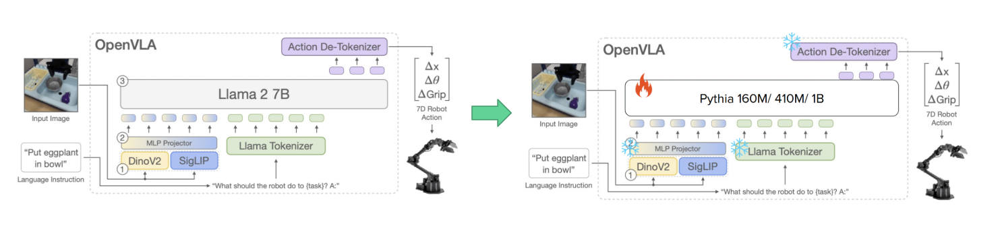
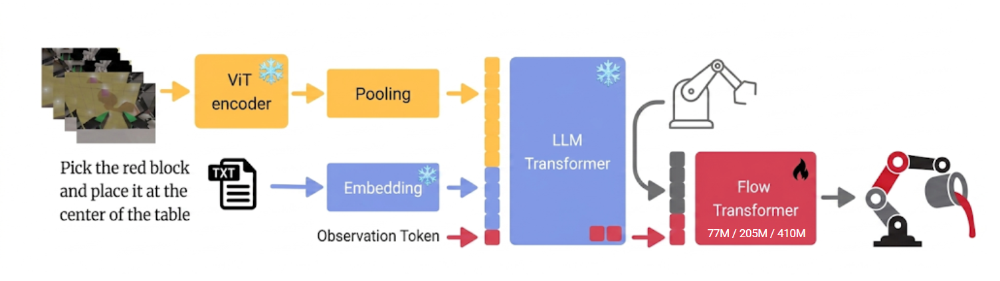

Robots that follow open-ended language instructions must connect three difficult problems: understanding a scene, interpreting what a person wants, and producing actions that change the physical world. Vision-language-action models, or VLAs, approach these problems with a single learned system. Given images and an instruction, a VLA predicts robot actions.
This approach has become increasingly prominent since systems such as RT-2, Octo, and OpenVLA showed how representations learned from large vision-language and robot datasets could support generalist manipulation policies. Instead of learning every task from scratch, a robot can begin with visual and semantic knowledge learned across many tasks and environments.
The same scale that makes these models useful also makes them difficult to deploy. A mobile manipulator or low-cost robot may have an embedded GPU, CPU, or accelerator rather than a datacenter GPU. Its model must share memory, power, and thermal headroom with camera processing, logging, safety checks, and low-level control. Cloud inference is possible, but network delay and connectivity are undesirable in a feedback loop where every action changes the next observation. Recent projects such as SmolVLA and EdgeVLA make compact training and edge inference explicit research goals.
Smaller VLAs would be easier to deploy, but a VLA contains several components that can be reduced independently: the visual encoder, the language or multimodal backbone, and the action network. Shrinking all of them at once would make it difficult to tell which change affected performance.
This report asks a narrower question:
When pretrained components already provide visual and language representations, how much capacity is still needed in the policy that turns those representations into robot actions?
We studied this question in two stages. We first built a frozen-interface adapter that could place smaller Pythia language models between LAPA’s learned input embeddings and action head. That experiment exposed a representation-alignment problem: changing the backbone also required learned bridges between independently trained spaces. We then moved to VLA Foundry, froze the same vision-language backbone for every run, and varied only the depth of the action policy. The code for both studies is available on GitHub.
Our experiments evaluate learning and control quality. They do not measure latency, memory use, energy consumption, or control frequency on an edge device. Edge deployment is the motivation for isolating policy capacity, not a demonstrated outcome of this project.
Why Policy Capacity Matters
What is a policy network?
In sequential decision-making, a policy is the rule an agent uses to choose an action from the information available to it. A deterministic policy can be written as
where h_t denotes the information available at time t, g denotes the goal, and a_t is the selected action. The history h_t may contain the current image, previous observations, robot state, or previous actions. In a language-conditioned robot, the goal g is often an instruction such as “put the orange on the saucer.”
A stochastic policy instead defines a distribution:
A policy network is a neural implementation of this decision rule. Depending on the architecture, it may predict a continuous action, discrete action tokens, a short chunk of future actions, or the intermediate quantity used by a diffusion or flow-based action generator.
The policy is different from an ordinary classifier because its output changes its future input. If the robot moves slightly too far to the left, the next camera image is also shifted. Repeated errors can move the robot into states that were uncommon or absent in the training data.
observation + instruction
|
v
policy
|
v
action --------> changed environment
^ |
|_______________________|
next observationThe word policy is used at two levels in robotics. Broadly, the entire VLA is a robot policy because it maps observations and instructions to actions; at the module level, a policy refers more narrowly to the trainable action head or action expert within a modular VLA. In this report, we focus on the second definition.
Why focus on policy size?
The vision-language backbone handles perception, including identifying objects, spatial relationships, and the intent behind an instruction. A separate action-producing policy can then be scaled without changing that pretrained backbone, which makes the policy a useful lever for studying capacity.
There are three plausible regimes:
- The policy is under-capacity. A shallow network cannot express the mapping from rich visual-language features to precise actions. Increasing policy capacity improves both action prediction and task success.
- The smallest policy is already sufficient. Once the backbone supplies strong features, additional layers provide diminishing returns.
- Another bottleneck dominates. A larger policy may fit held-out actions better while data coverage, frozen representations, or compounding control errors still limit task success.
Replacing LAPA’s Backbone
Why begin with LAPA?
Once we decided to study policy capacity, our first plan was direct:
Keep the task, data, and action representation as fixed as possible, replace the large policy backbone with a family of smaller models, and compare what changes as the replacement grows.
We began with Latent Action Pretraining from Videos (LAPA) for both practical and theoretical reasons.
The practical reason was familiarity. We had already spent substantial time reading the LAPA paper and working with its source code. We understood its checkpoint format, VQGAN visual tokens, latent-action labels, and Open-X data files. The official data already contained labels produced by LAPA’s latent-action quantizer, so we could test a replacement predictor without rerunning that expensive stage.
The theoretical reason was LAPA’s policy objective. LAPA formulates action learning as conditional sequence prediction: given visual context and an instruction, the model predicts a short sequence of discrete action-related tokens. Replacing one causal transformer with another is therefore structurally plausible. The target is also compact: four latent-action tokens, each selected from a vocabulary of eight codes.
We therefore began by replacing LAPA’s backbone. The following sections describe the original system and the components we changed.
The original LAPA-7B setup
LAPA uses video to address a basic data scarcity problem in robotics: internet video contains many examples of robotics data, but to learn from those, we need to create labels for the videos. LAPA turns those visible transitions into latent actions through two stages:
(frame t, frame t+1) -> LAPA quantizer -> latent-action labels
frame t + instruction -> LAPA policy -> predicted latent-action labelsFirst, a learned quantizer examines consecutive observations and assigns their transition a short sequence of discrete codes. For example, if one frame shows a gripper approaching a cup and the next shows the cup moving upward, the quantizer represents that change with learned tokens.
Let Q denote this quantizer:
Second, a policy learns to predict delta_t from the current observation and instruction. The released LAPA-7B-openx checkpoint implements this stage with a 7B-parameter model derived from LWM-Chat-1M-Jax and pretrained on Open X-Embodiment latent-action data. It accepts image and text inputs within a 4K-token context. A VQGAN converts the image into visual-token IDs, learned embedding layers map the visual tokens, instruction tokens, and previous latent-action codes into 4096-dimensional vectors, and a LLaMA-2 backbone processes the combined sequence. A linear latent-action head then predicts the next code.
ORIGINAL LAPA-7B-OPENX
image -> VQGAN token IDs ----> learned visual embedding ---\
instruction token IDs ------> learned text embedding ------+--> 7B LLaMA-2 backbone
previous latent-action IDs -> learned action embedding ----/ |
v
latent-action output head
|
four latent-action tokensThe learned interface surrounding the original backbone contains:
- a visual embedding layer with shape
8448 x 4096; - a text embedding layer with shape
32000 x 4096; - a latent-action embedding layer with shape
8 x 4096; - a linear latent-action head with shape
4096 x 8.
The first three modules are learned lookup tables, while the final module is a learned linear layer. All were trainable in the original LAPA system.
The policy generates four latent-action tokens autoregressively:
Here, g is the instruction, delta_t,k is the target at position k, and delta_t,<k contains the preceding action tokens. Each position has eight possible codes, so uniform random guessing has an expected per-token accuracy of 1/8 = 12.5%.
These latent codes describe learned visual transitions, not executable robot commands. The original LAPA workflow requires a later supervised fine-tuning stage on trajectories with ground-truth actions to connect the latent representation to a particular robot’s controls. Latent-token accuracy is therefore an intrinsic prediction metric, not a measure of task completion.
What we changed
Our intervention was to preserve LAPA’s tokenization, learned input embeddings, latent-action targets, and output head while replacing the 7B LLaMA-2 backbone with smaller Pythia models.

Pythia provides causal language models at several sizes under a shared pretraining recipe and data order. This gives a more controlled model-family comparison than selecting unrelated backbones. The engineering boundary was less convenient: LAPA is implemented in JAX/Flax, Pythia is implemented in PyTorch, and each Pythia size has a different hidden width.
The replacement followed four steps:
- Export the LAPA interface. We loaded the official checkpoint through its JAX code and exported the visual, text, and latent-action embedding layers and the latent-action output head to a framework-neutral
.npzfile. - Freeze the exported modules in PyTorch. Every Pythia model reused the same approximately 660 MB interface, which was excluded from individual adapter checkpoints.
- Insert Pythia between two projection layers. An input projection maps LAPA’s 4096-dimensional vectors to Pythia’s hidden width
h; an output projection maps Pythia’s states back to 4096 dimensions. - Train only the replacement path. Pythia and the two projections were trainable. The LAPA interface remained frozen, and the loss was computed only at the four latent-action prediction positions.
image / instruction / previous action IDs
|
FROZEN LAPA embedding layers
|
TRAINABLE projection (4096 -> h)
|
TRAINABLE Pythia backbone
|
TRAINABLE projection (h -> 4096)
|
FROZEN LAPA latent-action head
|
four predicted latent-action tokensPythia therefore receives LAPA-derived visual and language vectors rather than raw pixels or its ordinary text embeddings. Because every model size uses the same frozen input modules, targets, and output head, the central Pythia backbone is the main component that changes.
Training and evaluation
We reused the latent-action labels in LAPA’s official Open-X JSONL file rather than retraining the quantizer. The file contains 277,758 records:
- 269,425 training records;
- 8,333 validation records.
Each record contains 256 VQGAN visual-token IDs, a formatted instruction, and four latent-action targets in [0, 7].
We trained the adapters with latent-action cross-entropy, AdamW, and a learning rate of 1e-4. The 160M, 410M, and 1B models ran on one NVIDIA RTX A6000 with batch sizes 64, 32, and 16, respectively. The 6.9B attempt used a separate multi-GPU FSDP path.
We did not train every model for a fixed number of epochs. We evaluated validation loss periodically and stopped each run once it had largely plateaued and was no longer decreasing. We saved a checkpoint after every epoch and evaluated every saved checkpoint on the validation split. The reported score for each backbone is its highest validation token accuracy across those checkpoints.
Latent-action evaluation. All three completed Pythia runs reached roughly 47% best validation token accuracy, well above the 12.5% uniform baseline. This confirms that the replacement path learned nontrivial structure in LAPA’s latent-action labels.
| Backbone | Batch | Saved epochs evaluated | Best saved epoch | Best validation accuracy |
|---|---|---|---|---|
| Pythia 160M | 64 | 15 | 1st | 47.1% |
| Pythia 410M | 32 | 7 | 4th | 47.8% |
| Pythia 1B | 16 | 3 | 3rd | 46.9% |
SIMPLER robot-action evaluation. We then fine-tuned the 160M adapter on 2,234 training and 248 validation examples from SIMPLER, using a 245-way output layer for discretized 7-DoF actions. The software path also included a brief wrapper that converted camera observations into action tokens and then continuous commands, but the important result came from training: loss on the training set fell toward 0.01, while validation loss did not improve and instead increased from roughly 4.8 to 15. The best validation action-token accuracy was 12.6%.
The 12.6% action-token accuracy should not be compared with the earlier 12.5% latent-action baseline because they use different vocabularies and prediction tasks. We did not obtain a reliable closed-loop comparison across Pythia sizes.
What the results suggest
- Replacing LAPA’s multimodal backbone removed a crucial visual prior. The original LWM backbone had been trained extensively on image and video data. Its transformer had therefore learned how visual tokens describe objects, scenes, and temporal changes, and how those tokens interact with language. Pythia, by contrast, was pretrained only on text. Although it received vectors from LAPA’s frozen visual embedding table, it had not been pretrained to interpret those vectors or relate them to language. The replacement therefore removed much of the visual knowledge available to the original backbone.
- The projection layers could not replace multimodal pretraining. The two learned projections matched the hidden dimensions, but they did not provide the multimodal pretraining that Pythia lacked. The adapter training also had to teach a text-pretrained transformer how to use LAPA’s visual and language embeddings, making the experiment about more than backbone size.
- Additional capacity may help fit the latent-action task, but the evidence is weak. The 410M model achieved the highest validation accuracy, slightly above 160M. Only three saved epochs were evaluated for the 1B model; longer training or different optimization might allow it to fit better. However, the observed differences are below one percentage point, are not monotonic, and come from one run per size, so they do not establish a scaling trend.
- Generalization was a larger problem than fitting capacity. The latent-action models learned far above chance, but validation performance plateaued early. On SIMPLER, the 160M model nearly memorized the training set while validation loss worsened. More parameters alone would not resolve this data and regularization problem.
- Success at one evaluation stage did not transfer automatically to the next. Predicting LAPA’s latent codes above chance did not produce a generalizing robot-action predictor:
latent-token prediction
does not imply
action-token generalization
does not imply
closed-loop task successThe smaller Pythia models learned to predict LAPA’s latent labels, and the interchangeable-backbone implementation worked. However, replacing the multimodal backbone changed both model capacity and the model’s prior exposure to visual data. We therefore moved to a setup that kept the visual-language representation fixed and changed only the action network.
Isolating Policy Capacity with FoundryVLA
VLA Foundry provides this separation through a pretrained vision-language backbone and a dedicated action policy. We kept the backbone fixed across runs and varied only the action policy.
Our starting point was the released Foundry-VLA-1.7B-full checkpoint, a 1.7B-parameter VLA for bimanual manipulation. Its model card identifies the vision-language backbone as a separately released checkpoint, Foundry-VLM-1.3B-200M, with a 24-layer flow-matching action head on top. We did not reuse the released action head, because a single fixed head cannot answer a capacity question. Instead, we downloaded the same Foundry-VLM-1.3B-200M backbone checkpoint, froze it, and trained our own action policies of varying depth on top of it. The deepest of our three presets matches the released head’s architecture (24 layers, hidden dimension 1,024, 16 attention heads), so our largest rung can be read as a from-scratch retraining of the released component under a far smaller data budget.
The frozen backbone received a language instruction and the six simulated camera views contained in the preprocessed LBM shards (two scene cameras and four wrist cameras). A trainable flow-transformer policy mapped the resulting representation to 20-dimensional bimanual actions for two simulated Franka Panda arms.

The policy uses flow matching to transform random noise into a continuous action conditioned on the backbone’s features. It predicts continuous actions without discretizing them into tokens. Because the policy is separate from the VLM, we can vary its depth while keeping the visual-language representation fixed.
A depth-only scaling axis
We compared three Foundry transformer presets:
77M: 6 transformer layers;205M: 12 transformer layers;410M: 24 transformer layers.
All three use hidden dimension 1,024, 16 attention heads, head dimension 64, maximum sequence length 2,048, bidirectional attention, and no vocabulary embedding. The preset names count an embedding table that is disabled in our policy configuration, so they should be read as model-rung labels rather than exact trainable parameter counts.
Under our setting, only depth changes. This experiment therefore asks whether adding transformer layers helps; it does not test width scaling or every possible form of policy capacity.
Data and optimization
We trained one policy per task on three tasks from the LBM simulation data:
- PickAndPlaceBox: 5,175 sequences;
- PutOrangeOnSaucer: 5,324 sequences;
- PushBox: 2,111 sequences.
For each task, we randomly held out roughly 10 to 15 percent of the sequences for validation and trained on the rest. We use these tasks as a controlled suite for our comparison; we do not claim that this three-task subset is itself a standard VLA benchmark.
Each model saw a budget of 40,000 training samples, approximately 312 optimizer steps. The final configuration used AdamW, learning rate 5e-5, cosine decay, 50 warmup steps, effective batch size 128, and seed 42 on one NVIDIA RTX A6000. Because the sample budget was fixed while dataset sizes differed, PickAndPlaceBox received about 7.7 effective passes through its data, whereas PushBox received about 19. This difference raises a greater overfitting risk for PushBox.
Offline prediction and closed-loop control
Before examining the results, it is useful to separate two questions.
Validation MSE asks whether predicted actions resemble held-out demonstration actions. It is inexpensive and useful for comparing training runs, but the model is evaluated on states collected by the dataset.
Closed-loop success asks whether the policy completes a task after its predictions are executed. If the environment evolves according to
then an error in a_t changes s_{t+1}, which changes every decision that follows. Small supervised errors can accumulate into large trajectory errors. Conversely, MSE may penalize an action that differs from the recorded demonstration even if it is another valid way to complete the task.
We therefore use validation MSE to measure held-out action prediction and simulation rollouts to measure end behavior. Fifty episodes were run for each model on PickAndPlaceBox and PutOrangeOnSaucer. PushBox could not be run through the full fifty-episode evaluation, so it contributes validation numbers and individual recorded rollouts rather than a success count.
Results
Held-out action prediction. Lower MSE is better.
| Task | 77M / 6 layers | 205M / 12 layers | 410M / 24 layers |
|---|---|---|---|
| PickAndPlaceBox | 0.3003 | 0.2802 | 0.2703 |
| PutOrangeOnSaucer | 0.3037 | 0.3017 | 0.2840 |
| PushBox | 0.3089 | 0.3005 | 0.2903 |
The measured ordering is monotonic on all three tasks. From the 6-layer to the 24-layer policy, MSE decreases by about 10.0% on PickAndPlaceBox, 6.5% on PutOrangeOnSaucer, and 6.0% on PushBox.
The size of the improvement varies by task. PickAndPlaceBox improves with each increase in depth. The 6-layer and 12-layer results on PutOrangeOnSaucer are similar, with most of the improvement appearing at 24 layers. PushBox also improves with depth, although its smaller dataset and validation split make that comparison less certain.
Under this single-seed, 40K-sample setup, deeper policy heads fit held-out actions better. The experiment does not establish whether these differences exceed seed-to-seed variation.
Closed-loop simulation.
| Task | 77M / 6 layers | 205M / 12 layers | 410M / 24 layers |
|---|---|---|---|
| PickAndPlaceBox | 2 / 50 | 3 / 50 | 4 / 50 |
| PutOrangeOnSaucer | 0 / 50 | 0 / 50 | 0 / 50 |
| PushBox | unavailable | unavailable | unavailable |
The PickAndPlaceBox counts increase by one success at each depth, but the absolute performance remains poor: 4%, 6%, and 8%. With one trained seed and only 50 episodes per policy, this small difference is not strong evidence of a practical depth effect. All three policies failed every PutOrangeOnSaucer rollout.
The qualitative failures were also similar across sizes. Motions were often nonsmooth, hesitant, and imprecise. These behaviors matter in contact-rich manipulation: oscillation can disrupt a grasp, hesitation can consume the available horizon, and a small endpoint error can turn a placement attempt into a failure.
The clips below are representative rollouts from the largest, 24-layer (410M) policy.
What the results suggest
Two findings stand out:
- Policy depth affected held-out action prediction. The 24-layer policy reached lower validation MSE than the 6-layer policy on all three tasks. This provides evidence that the smallest policy was capacity-limited under the supervised objective, although one seed is not enough to establish a general scaling law.
- Better offline prediction did not produce reliable closed-loop control. The rollout counts weakly followed the MSE ordering on PickAndPlaceBox, but all success rates remained low, and every model failed PutOrangeOnSaucer.
Increasing policy depth improved held-out action prediction, but none of the policies produced reliable closed-loop behavior. The current experiments do not isolate the cause of this gap.
This gap is unlikely to be explained by architecture alone. The released Foundry-VLA-1.7B-full model was trained on 102 million samples spanning many simulated and real bimanual tasks. By contrast, each of our policies saw only 40,000 samples from a single task. The much smaller and less diverse training set is one likely reason for the performance difference. Our policies may be undertrained or too narrowly fit to individual tasks, but the current experiments cannot separate these effects.
We did not have enough time or compute to test the cause directly. Two possible explanations are insufficient training and covariate shift.
Hypothesis 1 — undertrained for flow matching. Our fixed budget of 40,000 samples is roughly 312 optimizer steps. Flow- and diffusion-based manipulation policies such as Diffusion Policy are typically trained for tens to hundreds of thousands of steps. An under-converged vector field yields noisy velocity estimates, and integrating a noisy field at every control cycle looks exactly like jitter.
Hypothesis 2 — compounding covariate shift. Behavior cloning trains only on states that demonstrations visit. The first slightly wrong action moves the arm into a state the dataset never covered, the next prediction is less reliable there, and errors compound. The hesitant and oscillating motions we observed are consistent with this explanation, although they do not establish that covariate shift was the cause.
Both problems could be present at the same time. Longer training may improve the learned flow field, while broader state coverage may help the policy recover from its own errors. Additional experiments are needed to determine how much each factor contributed.
Next steps
These experiments used one RTX A6000 and a fixed budget of 40,000 training samples per policy. Closed-loop performance was poor, so the next experiments should test whether longer training or broader state coverage improves it.
Addressing undertraining. The direct test is to pick one task and one policy size and extend training by one to two orders of magnitude, saving intermediate checkpoints throughout. Evaluating intermediate checkpoints would show whether validation MSE and rollout success improve together with additional training, or whether better offline prediction still fails to improve control.
Addressing covariate shift. One option is to inject noise into demonstrated trajectories and train on the resulting recovery behavior. A more involved option is DAgger-style relabeling in simulation, which would collect corrective actions from states visited by the learned policy. Co-training a single policy across all three tasks at a matched budget would separately test the narrow-tuning concern: if broader data improves simulation result, we know the failure was caused by data distribution.
Summary
VLAs combine visual understanding, language conditioning, and robot control, but their capacity is distributed across several components. This makes “how small can the model be?” too broad to answer with a single parameter count.
Our first study built a JAX-to-PyTorch export path and a frozen-LAPA adapter for interchangeable Pythia backbones. The adapters learned latent actions well above a uniform baseline, but the observed model-size differences were small and overfitting across saved epochs dominated. More importantly, replacing LAPA’s multimodal backbone with text-pretrained Pythia removed the original visual prior, while the learned projection bridges mixed capacity with representation alignment.
Our second study used a cleaner boundary. We froze the same Foundry VLM and changed only the depth of the action policy. Deeper policies consistently lowered held-out action MSE, but all tested sizes remained unreliable in closed-loop simulation.
Both studies ended in negative results, and we believe documenting them honestly is the most useful contribution of this report. The LAPA experiment showed that replacing the multimodal backbone with Pythia changed more than model size: it also required the system to relearn how to interpret visual representations. In the Foundry study, increasing policy depth improved validation MSE, but this improvement did not translate into reliable rollout performance. With more time and compute, we would train for longer, run multiple seeds, evaluate on more episodes, and include more informative closed-loop control metrics.
These results are not enough to determine when a larger policy is useful. That comparison depends on the pretrained representation, the training data, and whether improvements in offline prediction lead to better closed-loop control.
References
- Brohan et al. RT-2: Vision-Language-Action Models Transfer Web Knowledge to Robotic Control. 2023.
- Octo Model Team et al. Octo: An Open-Source Generalist Robot Policy. 2024.
- Kim et al. OpenVLA: An Open-Source Vision-Language-Action Model. 2024.
- Shukor et al. SmolVLA: A Vision-Language-Action Model for Affordable and Efficient Robotics. 2025.
- Budzianowski et al. EdgeVLA: Efficient Vision-Language-Action Models. 2025.
- Ye et al. Latent Action Pretraining from Videos. 2024.
- Biderman et al. Pythia: A Suite for Analyzing Large Language Models Across Training and Scaling. 2023.
- Mercat et al. VLA Foundry: A Unified Framework for Training Vision-Language-Action Models. 2026. Code.
- Li et al. Evaluating Real-World Robot Manipulation Policies in Simulation. 2024.
- Chi et al. Diffusion Policy: Visuomotor Policy Learning via Action Diffusion. 2023.
- Ross et al. A Reduction of Imitation Learning and Structured Prediction to No-Regret Online Learning. 2011.
Project code: github.com/HE-1234/CS295-How-Much-Policy-Does-a-VLA-Need